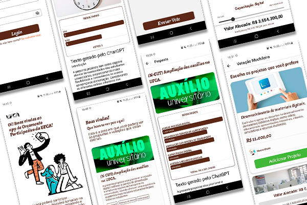
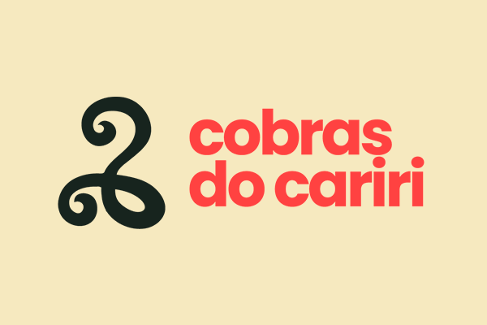
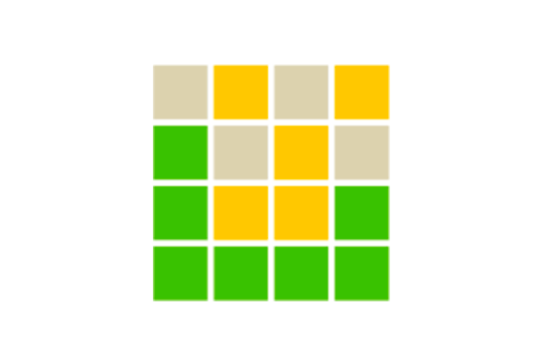
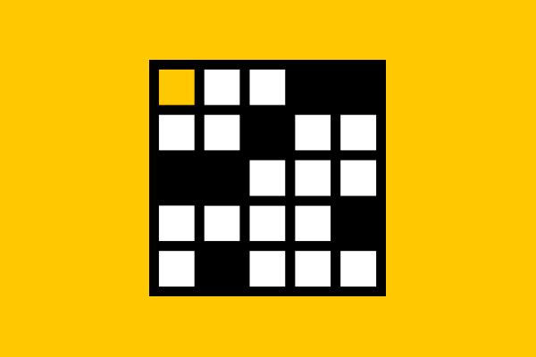

Projetos, Publicações & Contato

Mobile
App para votação de projetos e divisões orçamentárias da Universidade Federal do Cariri.
React Native Strapi

Desenvolvimento Web
O projeto Cobras do Cariri busca levar informação e facilitar a identificação de cobras da região da Chapada do Araripe através de um app web.
HTML CSS Python Flask Bootstrap

Desenvolvimento Web
Password foi um projeto feito em parceria com a empresa Fanatee, em que criei uma adaptação do seu jogo Password para web.
HTML CSS Javascript

Desenvolvimento Web
Crosswords foi um projeto feito em parceria com a empresa Fanatee, em que criei uma adaptação do famoso jogo Cruzadinha para web, nas versões tradicional e mini.
HTML CSS Javascript
Emparelhamentos, Grafos Livres de P6, Deleção de arestas, Algoritmos
Algoritmos, Complexidade Computacional, Teoria dos Grafos e Combinatória
Grafos, Complexidade Parametrizada, Algoritmos, Emparelhamentos, Deleção de Arestas, Grafos livres de P6, Decomposição em Árvore, Algoritmo FPT
Você deseja trabalhar em algum projeto comigo? Utilize o formulário abaixo para entrar em contato:
Site ainda em construção.
Feito com ❤️ por Samuel Santos (2023).